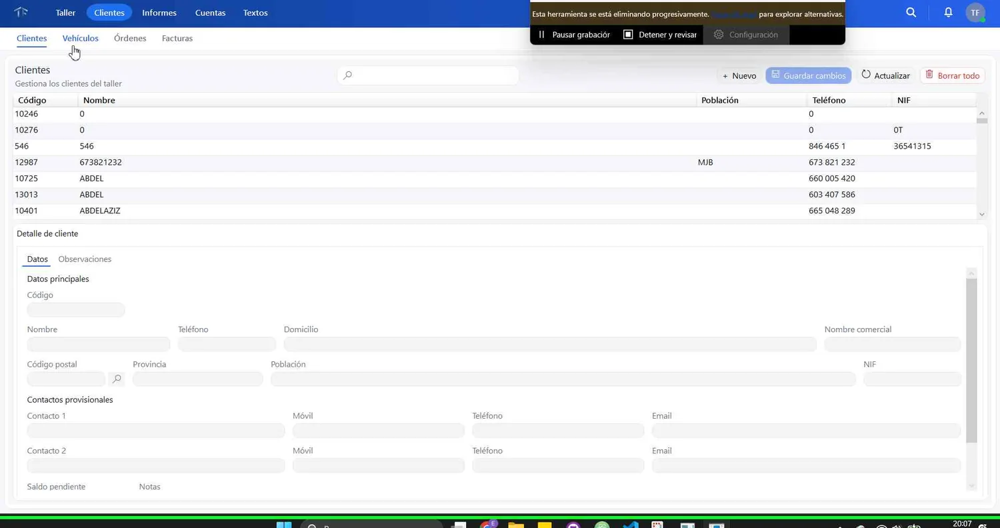
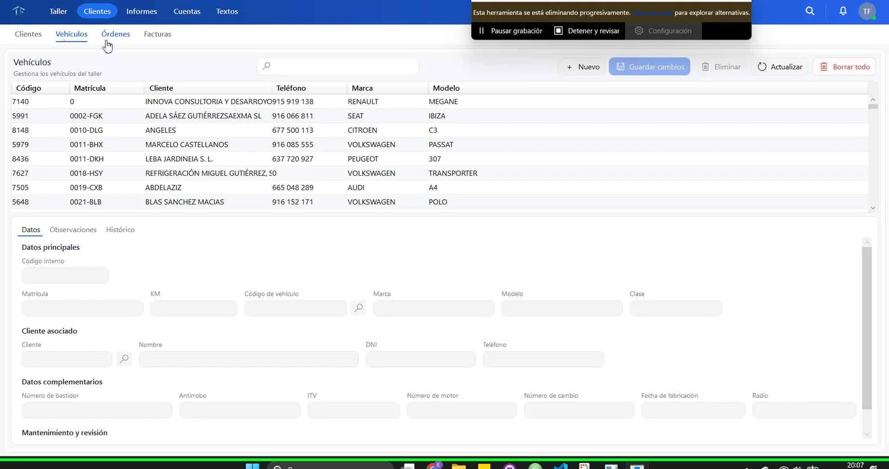
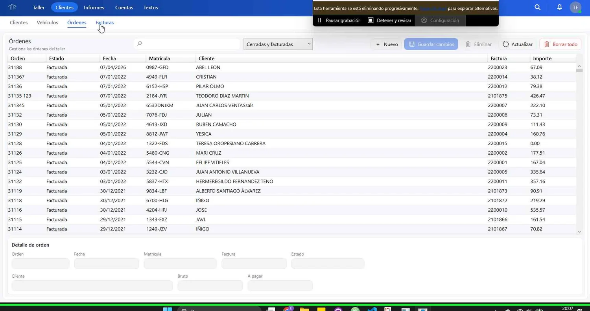
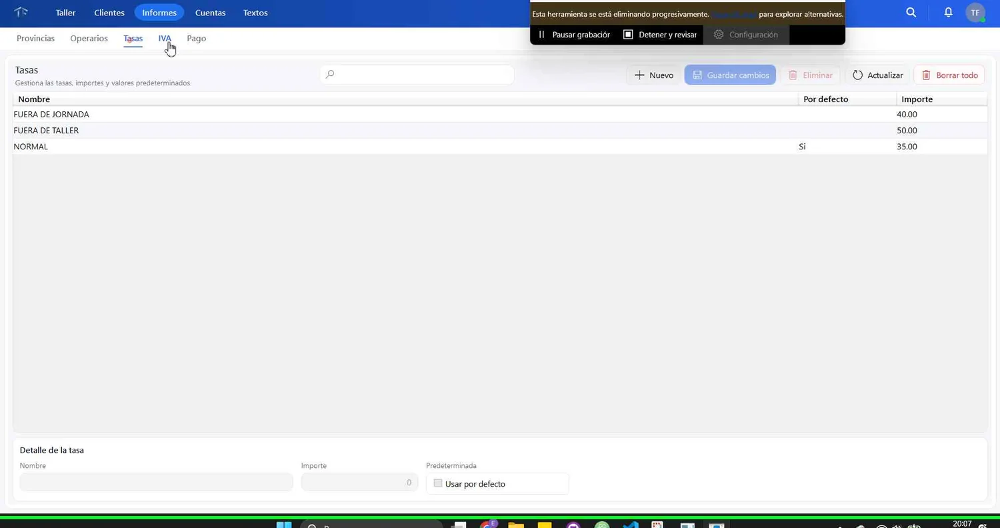

Clientes
Datos de contacto, información fiscal y acceso a la información relacionada.
Consulta las pantallas principales antes de solicitar una demostración.
Las capturas muestran la aplicación para Windows tal como se utiliza en el taller.

Datos de contacto, información fiscal y acceso a la información relacionada.

Matrícula, kilometraje, historial y relación con el cliente.

Trabajos, materiales, observaciones y seguimiento de la reparación.

Documentos PDF, datos fiscales, trazabilidad, QR y registro legal.
En la demostración recorremos el flujo que utiliza tu taller y aclaramos qué funciones están disponibles.